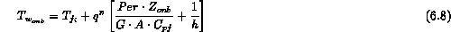
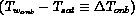
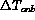
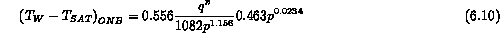
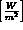
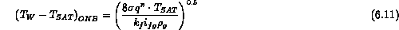
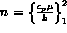
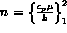
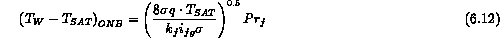

In a similar fashion to pool boiling heat transfer if the wall temperature rises sufficiently above the local saturation temperature pre-existing vapor in wall sites can nucleate and grow. This temperature, , marks the onset of nucleate boiling for this flow boiling situation. From the standpoint of an energy balance this occurs at a particular axial location along the tube length, . Once again for a uniform flux condition, Equ (2) becomes

We can arrange this energy balance to emphasize the necessary superheat above saturation for the onset of nucleate boiling 
Now that we have a relation between  and  we must provide a stability model for the onset of nucleate boiling. In a manner similar to the pool boiling situation one can formulate this model based on the metastable condition of the vapor nuclei ready to grow into the world. There are a number of correlation models for this stability line of . Using this approach, Bergles and Rohsenow (1964) obtained an equation for the wall superheat required for the onset of subcooled boiling. Their equation is valid for water only, given by
we must provide a stability model for the onset of nucleate boiling. In a manner similar to the pool boiling situation one can formulate this model based on the metastable condition of the vapor nuclei ready to grow into the world. There are a number of correlation models for this stability line of . Using this approach, Bergles and Rohsenow (1964) obtained an equation for the wall superheat required for the onset of subcooled boiling. Their equation is valid for water only, given by

where q;SPMquot; is the surface heat flux in  and p is the system pressure in bar. An alternative expression by Davis and Anderson (1966) valid for all fluids is:

where  is the liquid-vapor surface tension, Equations (10) and (11) are in good agreement with each other for the case of high pressure water flows. Frost and Dzakowic (1967) have extended this treatment to cover other liquids. In their study nucleation was assumed to occur when the liquid temperature, T (y) was matched to the temperature for bubble equilibrium,
is the liquid-vapor surface tension, Equations (10) and (11) are in good agreement with each other for the case of high pressure water flows. Frost and Dzakowic (1967) have extended this treatment to cover other liquids. In their study nucleation was assumed to occur when the liquid temperature, T (y) was matched to the temperature for bubble equilibrium,  , at a distance where  rather than
, at a distance where  rather than  used in past work. Thus Eq. (11) becomes:
used in past work. Thus Eq. (11) becomes:

We would recommend this final general expression to be used with the energy balance to determine and  for a specified uniform heat flux. In the case of a known wall temperature one can find the heat flux at the onset of nucleate boiling as well as its corresponding location.
for a specified uniform heat flux. In the case of a known wall temperature one can find the heat flux at the onset of nucleate boiling as well as its corresponding location.